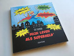
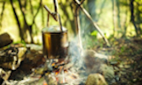
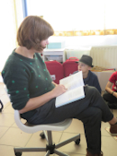

Inleiding boeken

Duik je mee met Noah in zijn avontuur? Hij liet in dit boek alvast hier en daar een plekje voor jouw belevenissen. Zo wordt zijn verhaal ook een beetje jouw verhaal, leuk toch?
Voor kinderen vanaf 8 jaar die houden van een spannend verhaal en op zoek willen naar hun superkrachten.
Lees meer
Inleiding bushcraft

Bushcraft is een verzamelnaam voor vaardigheden die nodig zijn om in de natuur te verblijven.
Bushcraft is populair: kijk maar naar de vele tv-programma’s op zenders zoals Discovery Channel. Natuur is niet alleen om naar te kijken, maar ook om te gebruiken.
Lees meer
Inleiding lezingen

Liv Leeman geeft ook nog eens lezingen. Dit doet ze over zowel haar boek, als bushcraft. Bij bushcraft kan er ook een kleine demonstratie zijn. Ze geeft lezingen voor zowel kinderen als volwassenen. Meer hierover op de pagina 'Lezingen'.
Lees meer